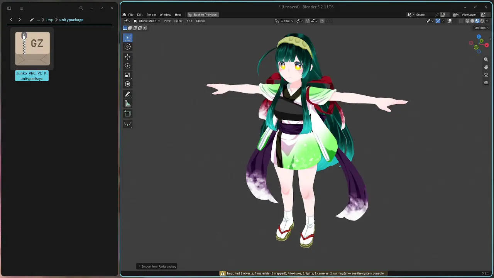
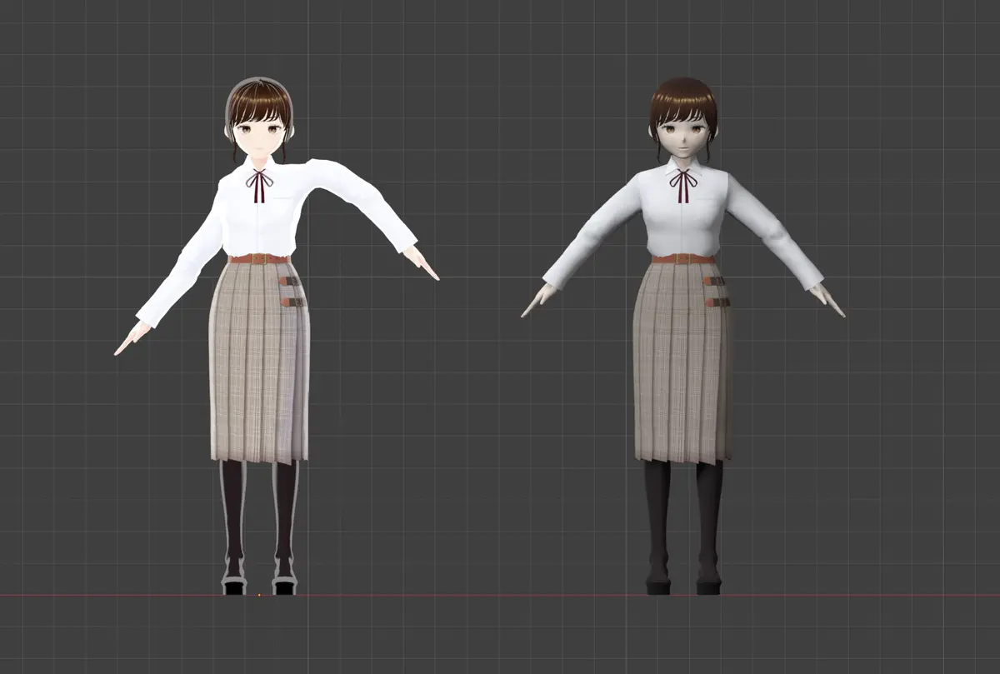
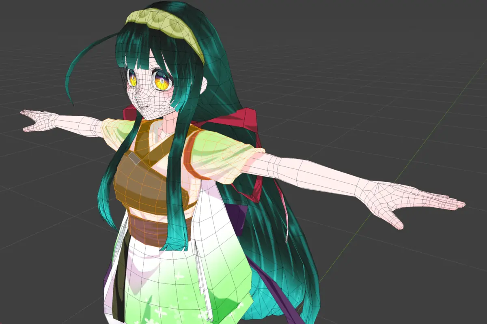

Unitypackage Importer
無料
.unitypackage を、
テクスチャ付きで Blender へ。

 FBX だけ
このアドオン
FBX だけ
このアドオン
Model: Tohoku Zunko © SSS LLC.
FBX だけ
このアドオン
.unitypackage を Blender の画面に落として、Import を押すだけ。Unity は要りません。

lilToon・Poiyomi・MToon などの設定を読んで、トゥーン調か PBR に組み直します。あとから切り替えもできます。

自動（トゥーン） PBR に切り替えボーンやシェイプキーも入るので、編集モードで網目を見たり、ポーズや表情を付けたりできます。
